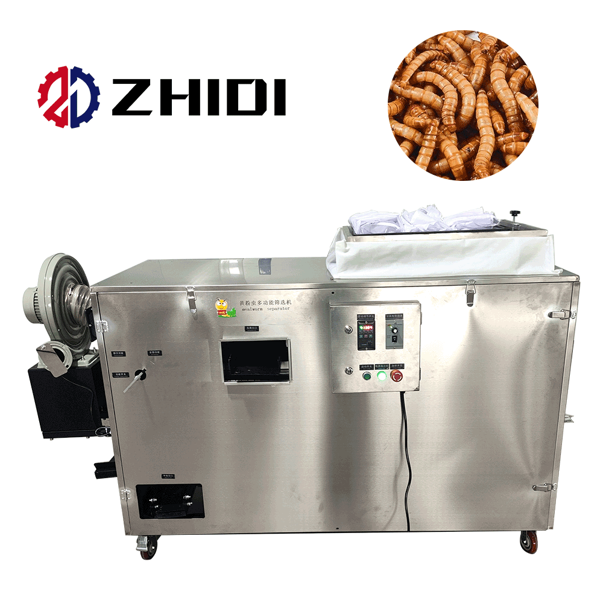
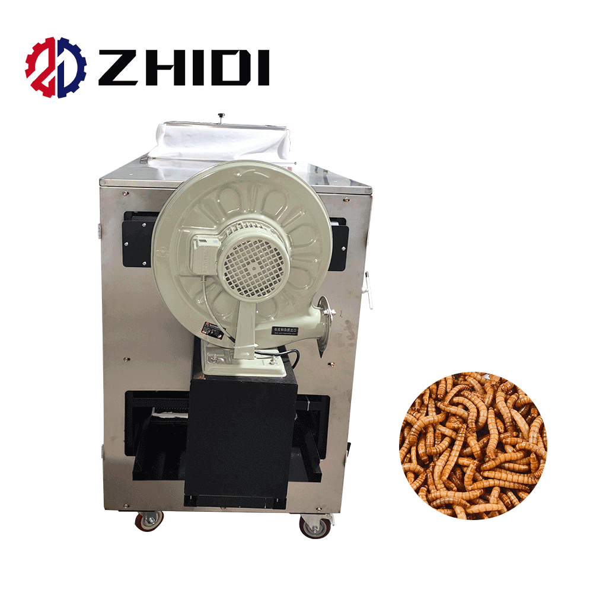
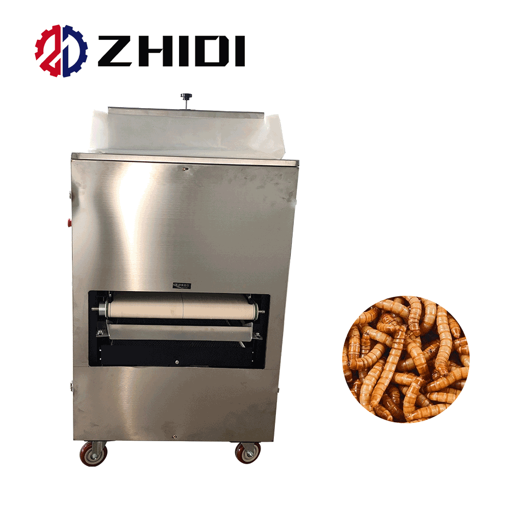

i.classList.remove('active'));this.classList.add('active')">

i.classList.remove('active'));this.classList.add('active')">
i.classList.remove('active'));this.classList.add('active')">★ Insect Protein Processing
Mealworm Screening Machine
The ZHIDI Mealworm Screening Machine is a multi-purpose sorting and screening system designed specifically for mealworm (Tenebrio molitor) breeding and processing operations. It efficiently separates pupae from adult beetles, removes dead worms and feces, and grades mealworms by size (large, medium, small) — all in a single pass. The stainless steel construction ensures durability and hygiene, while the dust-free design prevents cross-contamination. Priced at CNY 30,976.40.
Multi-stage size grading
Pupae / beetle / worm separation
Dead worm & feces removal
Dust-free operation
Stainless steel durable
11th generation improved design